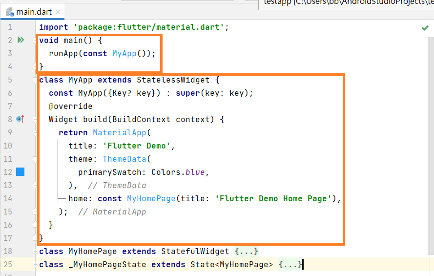
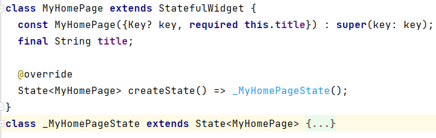
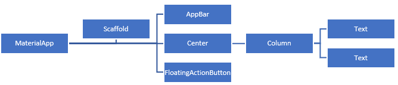

內容涵蓋
- 主程式-main.dart
- StatelessWidget-不具狀態widget
- StatelfulWidget-具狀態widget
主程式-main.dart
利用Android Studio開啟第一個專案testapp，刪除所有註解並合併類別(class)程式區塊，結果如下圖。

程式架構說明
1. Flutter預設使用Android Material設計，所以利用 import 匯入material套件material.dart
2. 主程式main執行runApp，runApp語法為 runApp(const MyApp)，MyApp為一不具狀態Widget，Flutter頁面均由 Widgets 所組成，Widget 為程式類別(class)，具狀態或不具狀態Widget稍後將進行說明。
3. MyApp Widget透過Widget build方法傳回MaterialApp widget，而MaterialApp widget的 home 屬性設定MyHomePage widget為預設頁面

程式架構說明
1. MyHomePage widget為一具狀態widget，宣告具狀態widget一定包含兩個類別，第一個類建立具狀態widget(class MyHomePage extends StatefulWidget)，在這個類別中僅利用createState()來建立狀態類別如_MyHomePageState。第二個類別 _MyHomePageState 為第一個類別 MyHomePage 的狀態類別

程式架構說明
1. 狀態類別 _MyHomePageState 利用 Widget build方法來顯示頁面內容。請注意：每個Flutter頁面都是由 Widgets樹所建構而成。

頁面Widgets樹
1. Flutter專案傳回MaterialApp widget，因此頁面Widgets樹的樹根為 MaterialApp widget，頁面使用 Scaffold widget 版面，在Scaffold widget中設定 AppBar widget,頁面內容 body,FloaringActionButton(浮動按鈕)。頁面內容 body則設定 Center widget(水平垂直置中)，置中內容使用 Column(欄版面)，欄版面包含兩個文字，因此整個Widgets樹如上圖。
StatelessWidget-不具狀態widget
當widgets內容為靜態(固定不變)則Widget可設定為Stateless(不具狀態)widgets，Stateless(不具狀態)widget，首先定義不具狀態widget的類別名稱如MyStatelessClass，之後在類別建構式中如有代入參數，則需定義代入參數，最後複寫(override)build函數來建立顯示內容。
程式架構說明
//不具狀態widget設定格式
class MyStatelessClass extends StatelessWidget {
const MyStatelessClass({Key key,this.inarg1}) : super(key: key);
final 資料類型 inarg1;
@override
Widget build(BuildContext context) {
return 使用者設定widget;
}
}
StatefulWidget-具狀態widget
Stateful(具狀態)widget一定包含兩個類別，第一個類建立使用者設定類別名稱如StatefulClass來定義具狀態類別StatefulWidget，建構式與代入參數同不具狀態widget，在這個類別中僅利用createState()來建立狀態類別如_MyStatefulClassState。第二個類別為使用者在第一個類別中設定的狀態類別，用widget(build)建立widget並使用、initState設定類別起始動作與setState來觸發狀態事件。
程式架構說明
class MyStatefulClass extends StatefulWidget {
MyStatefulClass({Key key, this.inarg1}) : super(key: key);
final 資料類型 inarg1;
@override
_MyStatefulClassState createState() => new _MyStatefulClassState();
}
class _MyStatefulClasstState extends State {
資料類型 attr1;
@override
initState() {
super.initState();
起始動作;
}
//setState用於改變狀態，會讓widget傳回build方法來反映變化
void myfunction1() {
setState((){
發布狀態更新;
});
}
@override
Widget build(BuildContext context) {
return 使用者設定widget;
}
}
練習：請將本課程開始範例程式MyHomePage修改為不具狀態widget。